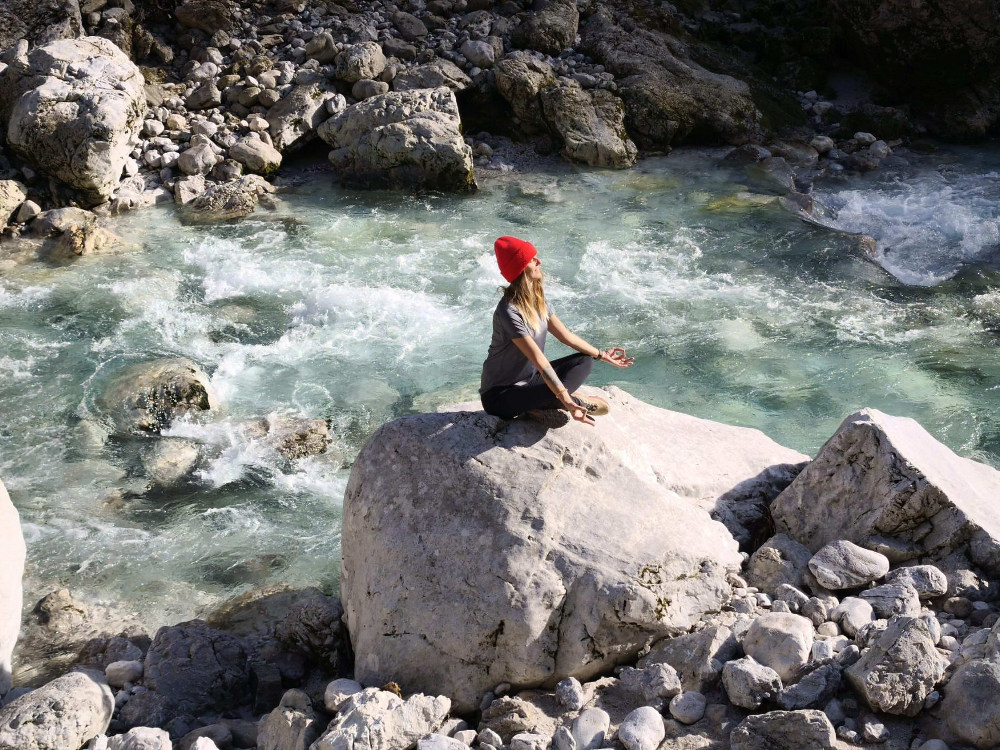
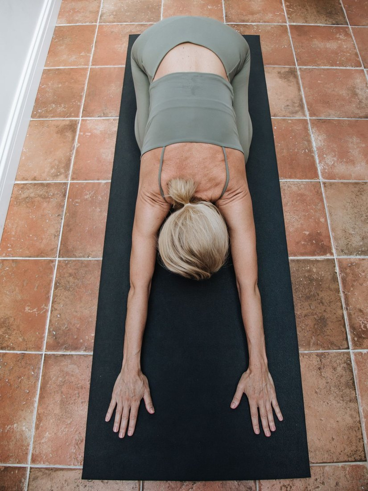
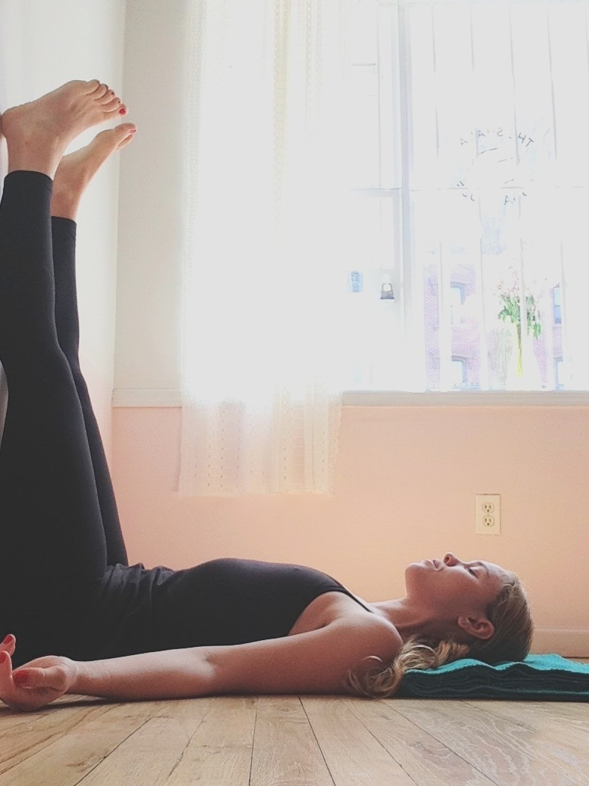
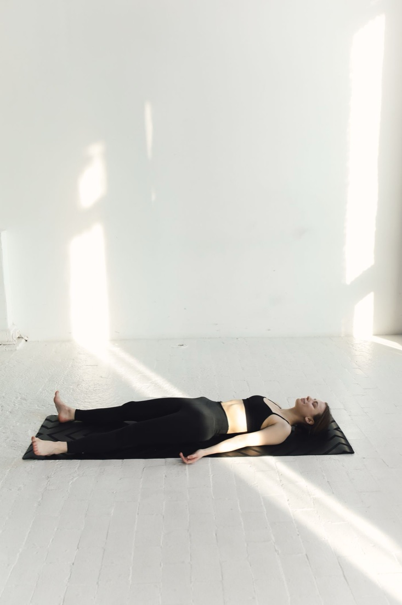
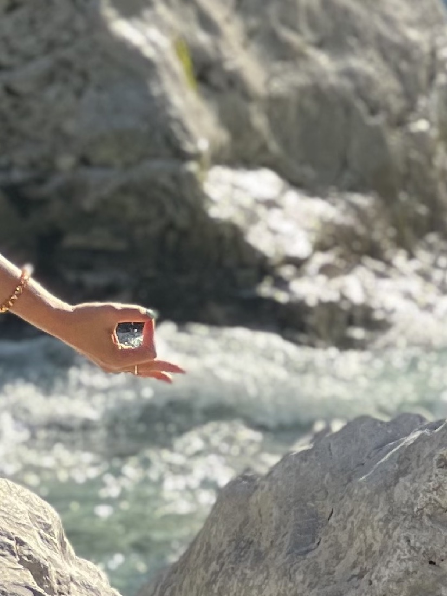
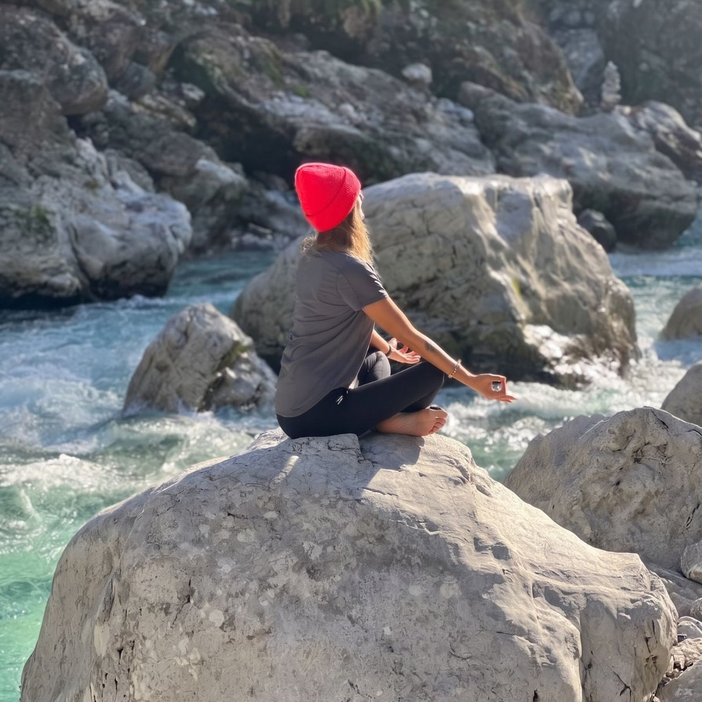
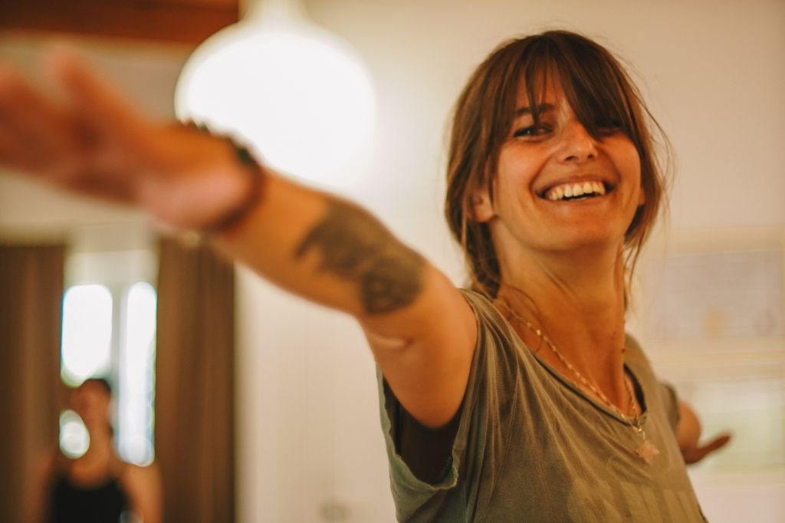
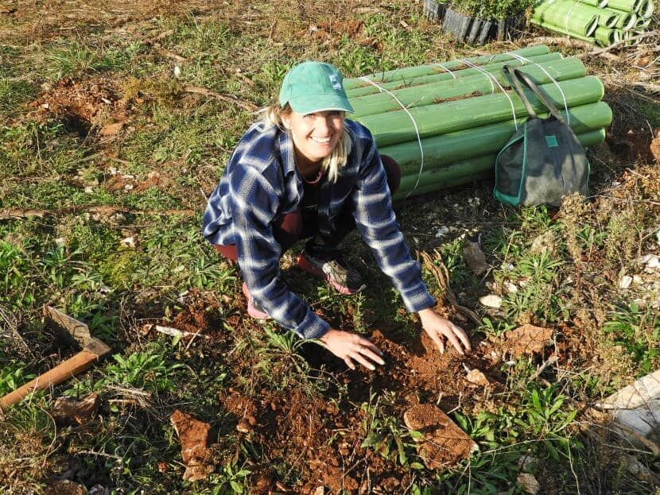

yo·ga/ˈjoʊ·ɡə/ noun
from Sanskrit “jog”, to join, to unite a practice where the body moves so the mind can settle.

The pose is not the goal.
Attention is.
This site is a place to learn how asanas work, what they ask of the body, and how a practice becomes therapy. The oldest definition of asana is three words: sthira sukham āsanam steady and at ease. Every school agrees there, then argues about the tools: breath, alignment, time. I teach the agreement noticing when steadiness and ease are really present, and what to change when they aren’t.
yogaś citta-vṛtti-nirodhaḥ
Yoga is the quieting of the turnings of the mind.
Asanas, explained

Child's pose
BālāsanaA restorative pose where every practice can return lengthens the back body, quiets the breath.

Legs up the wall
Viparīta KaraṇīA gentle inversion for the nervous system the heart of restorative work.

Corpse pose
ŚavāsanaThe deepest restorative pose it seals the practice, even when the practice was only five minutes.

Gyan mudra
Jñāna mudrāThumb and index finger meet what the hands and fingers do, the mind feels.
Practice outside
The best studio has no walls a beach, a forest, a park.
Classes are held mostly in Pula and its surroundings in the forest or by the sea, and we gladly roam further: hills with a view, or out to the Croatian islands. Outdoors the body works with its own weight on uneven ground, and the sounds of sea, wind and birds intensify presence. When the weather says no, we move online or indoors. Individual adapted sessions too at a location of your choice.

Certifications
Calm · Traditional Massage
Professional training in progress.In person or online
My name is Marina. In 10 years of yoga, meditation and pranayama, my practice ripens only when it is shared.


Yoga doesn’t begin on the mat it begins with a stiff back, restless sleep, years of sitting and procrastination. What I teach is quiet and adapted: steady, at ease, outside when the sky allows. You don’t need to be flexible, young or spiritual: an hour of the day is enough. All ages are welcome, because the class adjusts the practice is prepared to fit the student, never the other way around. Certified Ashtanga yoga teacher currently deepening my study of classical massage. The rest belongs to the practice.
Practice with me
Find me on Viber or WhatsApp or just call.
Remote worker in Istria, or coming to Croatia? Book a session straight into your calendar in person in Pula or online.
Pick a timeHealth disclaimer
The content on this site is for general education about yoga and movement. It is not medical advice, diagnosis or treatment, and it does not replace consultation with a doctor or physiotherapist. Check with a qualified health professional before beginning any practice shown here, especially if you are pregnant, recovering from injury or surgery, or living with a medical condition. Practice is at your own risk: work within your own limits and stop if something causes pain.
Privacy
This site does not use cookies, analytics or tracking, and it collects no personal data. It is hosted on GitHub Pages; GitHub may log technical data such as your IP address when serving the page (see GitHub's privacy statement). If you contact me by email, I use your address and message only to reply, and share them with no one. If you book a session through a scheduling link, that provider's own privacy policy applies to the data you enter there.